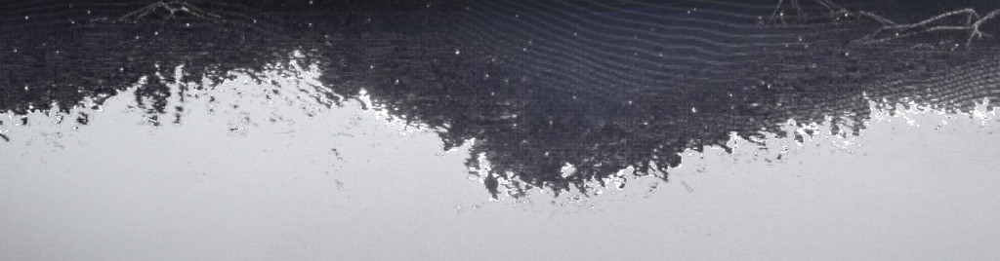

Erosion lab
Tiến độ
Thời gian (s)
Độ lởm chởm
Mép cháy
Phát sáng
Hạt pixel
Bảng màu ảnh gốc
Bảng màu HisTML
Tạm dừng
Chạy lại
Ảnh mẫu
Space: dừng/chạy · R: chạy lại · H: ẩn bảng · kéo "Tiến độ" để tua